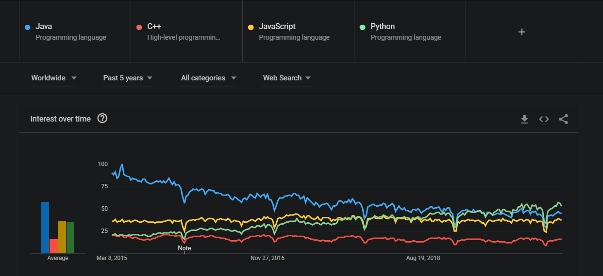

A report from the course XXX
S01
Question 1)
Personally, I've utilized Git through an application called GitHub Desktop and the inbuilt features of IntelliJ IDE. The main advantage of this is that I never really had the to learn to utilize Git via a terminal since the UI does it for one. Other than that my knowledge prior to this introduction were limited. I've hear about it but never really utilized these functions
Question 2)
No, I've never created a webpages beyond utilizing Tomcat for some RESTful web applications that involves accessing some sort of data.
Question 3)
I've never had much experience with web applications beyond some features that Tomcat had for some laborations.
Question 4)
TIL: The basics of utilizing Git through terminal and it's features.
S02
Question 1)
I haven't utilized HTML, CSS or JavaScript prior to this course so my knowledge about how to use them is slim. The only exposure I have had about them is flipping through some webpages and textbooks
Question 2)
The roles for the various elements are the following: CSS is primarily used to for style. You use this to make your webpage stylized and prettier. HTML is quite simple. It's what makes your website readable for humans. JavaScript is what makes your website dynamic. It's the coding part of designing a website.
Question 3)
How the browser, HTTP and web services interact is quite simple. First and foremost a web service is the very heart of communication between two machines. It allows one to communicate with each other utilizing an agreed upon protocol. This is where HTTP comes into places since HTTP is the most common utilized protocol for such communication. HTTP is a request/response style protocol where the client sends a request and gets back a response. In this one's web browser is the client and it's purpose is to send a request and get back a response that it can display for the user.
Question 4)
TIL: The basics of utilizing HTML, CSS and JavaScript.
S03
Question 1)
Programming with client side JavaScript I have next to no experience in prior to this course.
Question 2)
Comparing to the languages I know which is Java and Android's Java, there are some similarities between them. For instance is that all of these languages are object-oriented.I.E they deal with the concepts of objects. However there are some difference that do stick them apart. One of these difference that's noticeable is that JavaScript is a much more dynamic language compare to Java. As type checking is done during run time rather than compile time. So when comparing them in my view it's like comparing night and day.
Question 3)
The grade I aimed for was a grade 4. How my code turned out to be was a bit narrowed minded to be honest. For one part I was stuck at displaying the schools properly so I had to search the web for some help. But beside some overbloating in the css style where I chucked the flags in, I'd say it's okay.
Question 4)
TIL: The basics of utilizing HTML, CSS and JavaScript.
S04
Question 1
I've had no previous experience with node/npm previously. I've had however experience with Tomcat as a RESTful service
Question 2
I enjoyed working with JavaScript, Node and Express. It was refreshing to see how it all was intertwined with each other.
Question 3
For this coding assignment I decided to first do the pre-requs for it. Studied them up to see how everything worked out. Any major plans I did not really have. I did the pre-requs and the they were for the most part a good stepping stone to learn how to utilize node.js and npm.
Question 4
For the moment I aimed for a grade 3. And it wasn't difficult at all. I might before the course end try to see if I can improve on the grade.
Question 5
TIL: How to utilize node.js and Express to make web applications.
S05
Question 1
I feel like PHP is a pretty okay language once you get the hang of it. It was a bit troublesome at the start but with example code and some short studying it's quite easy to get a hang of it. One thing that kinda bothered me with PHP was that each variable had to have a $ a the start. This kinda made the code look more cluttered than it actually was for the untrained eye. One thing that helped with de-cluttering the code was separating the files from each other with the view folder.
Question 2
Comparing PHP to the languages I know there are some similarities. Especially JavaScript when it comes to how they handle variables. Another thing I've noticed with PHP is that it's this weird mix of code and HTML. For instance when one made the header and the footer it was PHP, however I could freely write HTML outside of the PHP scope without any hassle at all.
Question 3
The grade I aimed for this assigment was grade 4. Reasoning for this was that the examples provided were helpful and and once you got the hang of PHP and database it wasn't that hard of a grade to aim for.
Question 4
TIL: What I've learned today was how PHP works and integrating a database with a website.
S06
Question 1
What makes a programming language popular is dependant on the technologies that utilizes that specific language. For instance Java is a very popular language when it comes backend development of server applications because thanks to the JVM you can run it anywhere. However when it comes to for instance game development Java is not as popular due to the (hardware) technologies behind games predates Virtual Machines, so most developers don't utilize it since you couldn't re-use code. In fact the most popular engines for 3D games are almost exclusively C/C++ based. So the popularity of a language is all dependence on the technologies that wants to utilize it.
Question 2
My choice of language is dependent entirely on what I'm going to work with. For instance if I'm planning to become a web developer on the front-end, naturally, I would pick JavaScript. Because it is one of the most utilized language. When it comes for Android development my choices are limited to only Java and Kotlin. If I want to work on game development I'd have to pretty much stick with C/C++ since most engines are based off that. So picking an individual language to work with is a bit difficult but if I'd personally have to pick one language I'd want to work with then it would be Java.
Question 3
For this I decided to check the popularity of two statically typed languages in this case Java and C++, and two dynamically typed language which in this case are JavaScript and Python. The graph itself shows one interesting thing that I did not really anticipate.
This was the fact that Java over hte five past years have been on a steady decline in popularity. Going from nearly 100 to a meager 60 in over in less than 4 years. Another thing that was interesting to see was how popular Python as a language has become. Going from being searched as often as C++ into eclipsing both Java and JavaScript in just a few years. Why this is like this is difficult to pinpoint. However my assumption is going to be that Java is losing popularity is due to its age. While Python is relatively new comparing to the other languages.
Question 4
Recommending a new language or framework to a large project is quite difficult. Since it all depends on the knowledge of said language or framework, as well if the manager wants to approve it. If I would however sell a language I would try to highlight its strength and elaborate on it how it will overcome the language's weakness.
TIL
TIL: The overall change in popularity among programming language. It was interesting to see how Java has declined while Python has increased
S07
Here is the text for this section.
S08
Here is the text for this section.
S09
Here is the text for this section.
S10
Here is the text for this section.